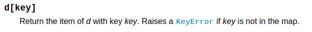

Výjimky (exceptions)#
Python používá ke zpracování chyb výjimky. Ne každý jazyk to dělá stejně. Například v C se používají tzv. návratové kódy - funkce navrací různé číselné hodnoty v závislosti na tom, k čem během chodu došlo.
Je-li vyvolána výjimka, chod programu se zastaví a hledá se nejbližší catch blok (tedy sada příkazů zodpovědná za zpracování výjimek). Není-li v aktuálním scope takový blok přítomný, je ukončen a program se přesune do následujícího stack frame v call stack - neboli do scope funkce, ze které byla ta dosavadní volána. To se opakuje, dokud program nenarazí na odpovídají blok, který výjimku zpracuje, nebo dokud nevyčerpá celý call stack, v kterémž to případě program neúspěšně skončí. Tomuto procesu/mechanismu se říká stack unwinding.
Chyby v programu napsaném v Pythonu jsou v zásadě dvojího druhu:
SyntaxErrorVšechny ostatní
K SyntaxError dochází ve fázi čtení, tj. když parser prochází zdojový kód. Je to tak jediná chyba, která se za normálních okolností nedá zachytit (někdy jo, ale o tom jindy). Všechny ostatní chyby lze zachytit a zareagovat na ně nějakým žádoucím způsobem. Začněme jednoduchým příkladem dobře čitelné chyby. Když dojde k neošetřené chybě, Pythoní interpret nám napíše, k jaké chybě došlo a vypíše její stack trace (někdy traceback), tedy kde k té chybě došlo
a = 1
b = 0
a / b # raises ZeroDivisionError
---------------------------------------------------------------------------
ZeroDivisionError Traceback (most recent call last)
/tmp/ipykernel_1146194/1701595597.py in <module>
1 a = 1
2 b = 0
----> 3 a / b # raises ZeroDivisionError
ZeroDivisionError: division by zero
Zde vidíme, že chyba je typu ZeroDivisionError a došlo k ní na řádku 3. To je celkem čitelné. Zkusme chybu zabalit do nějaké funkce. a podívat se, jak se traceback změní.
def f(a, b):
return a / b
f(1, 0)
Traceback je teď složitější, ale stále čitelný - postupuje zvenku dovnitř a ukazuje, v jaké funkci na jaké řádku k chybě došlo. To je velmi užitečné.
---------------------------------------------------------------------------
ZeroDivisionError Traceback (most recent call last)
/data/unicorn/python/book/content/exceptions/exceptions.ipynb Cell 6 line 4
1 def f(a, b):
2 return a / b
----> 4 f(1, 0)
/data/unicorn/python/book/content/exceptions/exceptions.ipynb Cell 6 line 2
1 def f(a, b):
----> 2 return a / b
ZeroDivisionError: division by zero
Try / except#
Chyby - výjimky - takzvaně zachytáváme a činíme tak pomocí dvojice bloků try a except. V bloku try spouštíme kód, u kterého máme podezření, že by mohl vyvolat (raise) nějakou výjimku, blokem except výjimku zachytáváme (v jiných jazycích se tento blok nazývá catch block).
def f(a, b):
a / b
try:
f(1, 0)
except ZeroDivisionError:
print("oi, we do not divide by zero")
print("the rest of the program")
oi, we do not divide by zero
the rest of the program
Vidíme, že přestože k chybě došlo, zachytili jsme ji a zpracovali, takže program nespadl. To je žádoucí stav, ke kterému se obvykle budeme snažit směřovat.
Jak zjistíme, jakou výjimku zachytit? Buď zkusíme kód spustit tak, aby selhal, a chybu najdeme na konci stack trace, nebo ji vyhledáme v dokumentaci - často potkáme fráze jako: “raises ThatAndThatError if beans not hot enough”.
Např. u typu dict se v dokumentaci píše:

Vyzkoušejme:
d = {
"a": 1,
"b": 0
}
try:
d["c"]
except KeyError:
print("ejhle, ono to funguje")
print("zbytek programu...")
ejhle, ono to funguje
zbytek programu...
Můžeme také zřetězit několik except bloků za sebou a zachytávat postupně různé výjimky, nebo zachytit více výjimek v jednom except bloku.
from random import randint
def faulty_function():
i = randint(1, 3)
match i:
case 1:
raise KeyError("fake key error")
case 2:
raise ZeroDivisionError("fake zero division error")
case 3:
raise AttributeError("fake attribute error")
try:
faulty_function()
except (KeyError, AttributeError):
print("this is the first except block")
except ZeroDivisionError:
print("this is the second except block")
this is the second except block
Výjimka jako objekt#
Každou odchycenou výjimku můžeme lapit do proměnné a získat ještě dodatečné informace. Každá výjimka obsahuje mimo jiných atributy args (obsahující konkrétní parametry) a __traceback__ (obsahující stack trace). Abychom ale traceback mohli číst, potřebujeme použít modul traceback.
import traceback
def a_funky_function():
d = {}
d["non-existent-key"]
try:
a_funky_function()
except KeyError as e:
print(e.args)
traceback.print_tb(e.__traceback__)
print("rest of the program")
('non-existent-key',)
rest of the program
File "/tmp/ipykernel_1148586/4267090218.py", line 8, in <module>
a_funky_function()
File "/tmp/ipykernel_1148586/4267090218.py", line 5, in a_funky_function
d["non-existent-key"]
Je možné zachytit i zcela obecnou výjimku - všechny výjimky jsou typu Exception:
try:
1/0
except Exception as e: # toto zachytí jakoukoliv výjimku
print(e.args)
('division by zero',)
Nikdy#
ale vážně nikdy (to znamená v žádném případě) a to tak, že za žádných okolností, neděláme toto:
try:
1 / 0 # jakykoliv vadny kod
except:
pass
Nezpracovaná, ale zachycěná výjimka znamená, že program nespadne, ale my o chybě vůbec nevíme. To znaměná, že se velmi špatně hledá.
Finally (a else)#
Kromě bloků try a except máme ještě bloky else a finally. Blok else následuje bezprostředně po except bloku (blocích) a vykoná se pouze v případě, že k žádné výjimce nedošlo. Blok finally je poslední a vykoná se vždy. Jeho smyslem je uklidit, tj. uzavřít otevřená spojení, navrátit zdroj atd. Následující příklad vše ilustruje - soubor se uzavře, ať už se stance v průběhu čtení cokoliv.
try:
file = open("file.txt", "r")
content = file.read()
except FileNotFoundError:
print("File not found.")
except Exception as e:
print("Some other error occured")
else:
print("File read successfully.")
finally:
if 'file' in locals(): # overi, jestli symbol f vubec existuje, tj. jestli se soubor vubec povedlo otevrit
file.close()
print("File closed.")
File not found.
File closed.
Vyvolání výjimky#
Výjimku samozřejmě můžeme i vyvolat. Používá se k tomu klíčové slovo raise. Seznam v pythonu dostupných výjimek nalezneme v dokumentaci - zde. S ohledem na kontext můžeme použít kteroukoliv z nich.
def my_function_raising_exceptions(x):
if x == 0:
raise ValueError("argument x is not supposed to be zero")
try:
my_function_raising_exceptions(0)
except ValueError as e:
print(e.args)
('argument x is not supposed to be zero',)
Kdy zachytit?#
Obecně se říká, že výjimka by se měla zachytit co nejblíže svému vzniku. Důvodů je řada, mezi hlavní patří např. kontext, za kterého výjimka vznikla (je dostupný, čitelný a výjimka snadno odstranitelná), čitelnost nebo třeba rychlost - v průběhu zpracování výjimky dochází k něčemu, čemu se říká stack unwinding - odvíjení zásobníku - Python postupně prochází zásobník volaných funkcí (call stack) a hledá, zda tam není někdo, koho ta výjimka zajímá (except blok). Když nikoho nenajde, program selže.
Následující série příkladů ilustruje, jaký vliv na celkový program má to, kde výjimku zachytíte. Můžete si k zachycení přípsat i traceback.
def may_throw():
raise RuntimeError("oh no, it happened")
def subprogram():
print("this is subprogram, doing subprogram things")
may_throw()
print("subprogram finished")
def mainprogram():
print("this is the main program, doing main program things")
print("calling subprogram")
subprogram()
print("mainprogram finished")
mainprogram()
---------------------------------------------------------------------------
RuntimeError Traceback (most recent call last)
/tmp/ipykernel_1146825/3985230583.py in <module>
13 print("mainprogram finished")
14
---> 15 mainprogram()
/tmp/ipykernel_1146825/3985230583.py in mainprogram()
10 print("this is the main program, doing main program things")
11 print("calling subprogram")
---> 12 subprogram()
13 print("mainprogram finished")
14
/tmp/ipykernel_1146825/3985230583.py in subprogram()
4 def subprogram():
5 print("this is subprogram, doing subprogram things")
----> 6 may_throw()
7 print("subprogram finished")
8
/tmp/ipykernel_1146825/3985230583.py in may_throw()
1 def may_throw():
----> 2 raise RuntimeError("oh no, it happened")
3
4 def subprogram():
5 print("this is subprogram, doing subprogram things")
RuntimeError: oh no, it happened
def may_throw():
raise RuntimeError("oh no, it happened")
def subprogram():
print("this is subprogram, doing subprogram things")
try:
may_throw()
except:
print("oh no it failed")
print("subprogram finished")
def mainprogram():
print("this is the main program, doing main program things")
print("calling subprogram")
subprogram()
print("mainprogram finished")
mainprogram()
this is the main program, doing main program things
calling subprogram
this is subprogram, doing subprogram things
oh no it failed
subprogram finished
mainprogram finished
def may_throw():
raise RuntimeError("oh no, it happened")
def subprogram():
print("this is subprogram, doing subprogram things")
may_throw()
print("subprogram finished")
def mainprogram():
print("this is the main program, doing main program things")
print("calling subprogram")
subprogram()
print("mainprogram finished")
try:
mainprogram()
except:
print("oh no it failed")
this is the main program, doing main program things
calling subprogram
this is subprogram, doing subprogram things
oh no it failed